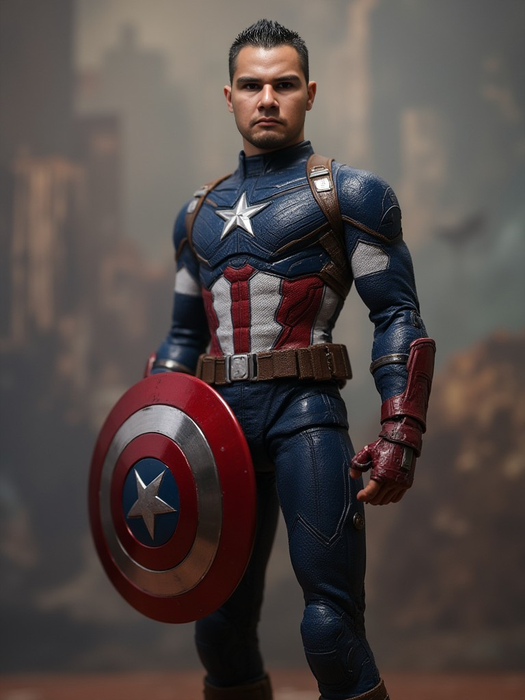

📚 Estaciones de Aprendizaje
🔢 Cuenta conmigo: números pares, impares y promedios
🧪 La ciencia de las arañas: datos curiosos de la naturaleza
💻 Código arácnido: cómo se hacen las páginas web

¡Hola, pequeño héroe! 👋 Así como Peter Parker es un estudiante normal que se convirtió en superhéroe, yo también empecé siendo un niño curioso que descubrió un superpoder secreto: ¡programar computadoras! 💻
Mi telaraña son las páginas web y las aplicaciones que conectan a las personas con la tecnología. Con gran poder viene… ¡gran responsabilidad de enseñar a los demás! 🕷️✨
HTML (la red), CSS (los colores), JavaScript (el movimiento), PHP y MySQL (la cueva secreta de datos).
🔢 Cuenta conmigo: números pares, impares y promedios
🧪 La ciencia de las arañas: datos curiosos de la naturaleza
💻 Código arácnido: cómo se hacen las páginas web